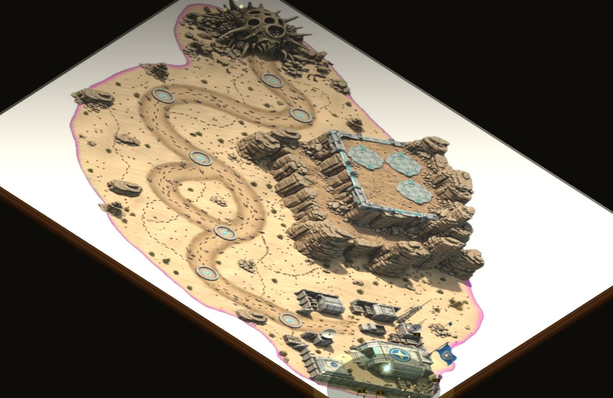
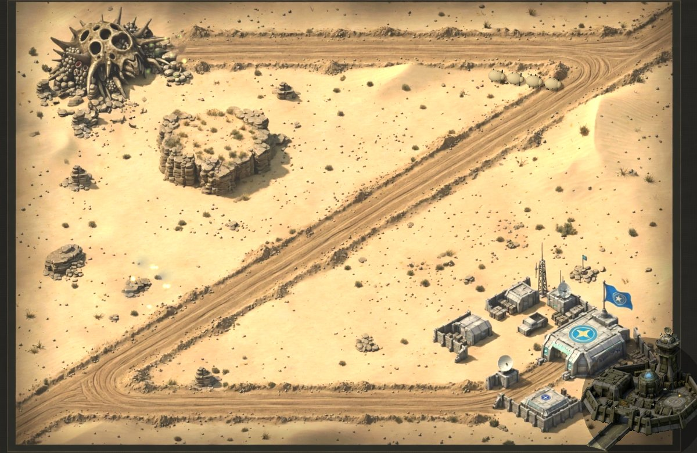
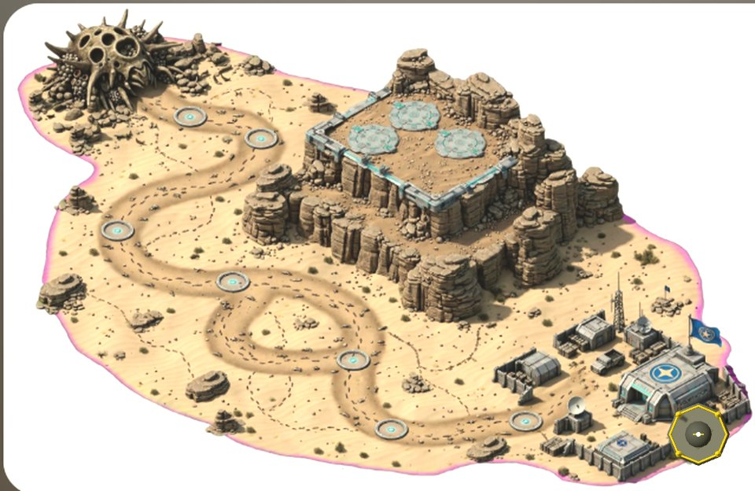
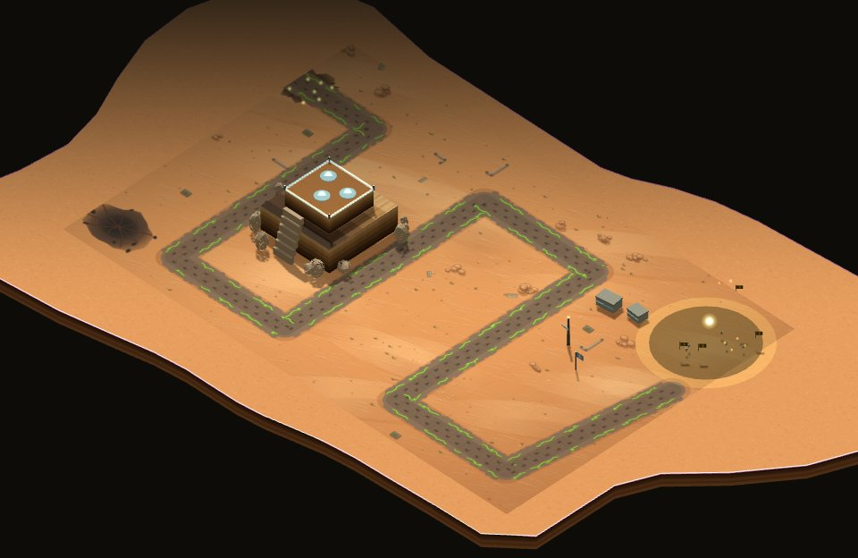

Serviço Federal de Defesa Planetária
Defense StarTrops
O enxame Arachnid está avançando sobre Klendathu. Escolha o posto de comando a partir do qual você vai defender o perímetro.

Mapa com textura de referênciaDefense StarTrops
O mapa de referência do cliente aplicado direto como textura do terreno, vista de cima para não distorcer a arte.

Estrada novaDefense StarTrops · Rota Reta
Mesmo mapa artístico, com a trilha do enxame redesenhada: perímetro bordejando o mapa, corte diagonal direto até a base federal.

Visão táticaDefense Klendathu
A visão de comando original, direto de cima: leitura rápida do perímetro inteiro para quem prefere planejar sem distração visual.

Redesenho do mapaDefense StarTrops · Ilha de Klendathu
Terreno todo reconstruído em geometria real: platô murado com plataformas tech, base federal com anexo de prédios e uma ilha orgânica flutuando no vazio.

Registro históricoDefense StarTrops · Clássico
Um retrato congelado do mapa isométrico como era antes do redesign — para comparar a evolução do projeto ou só matar a saudade.